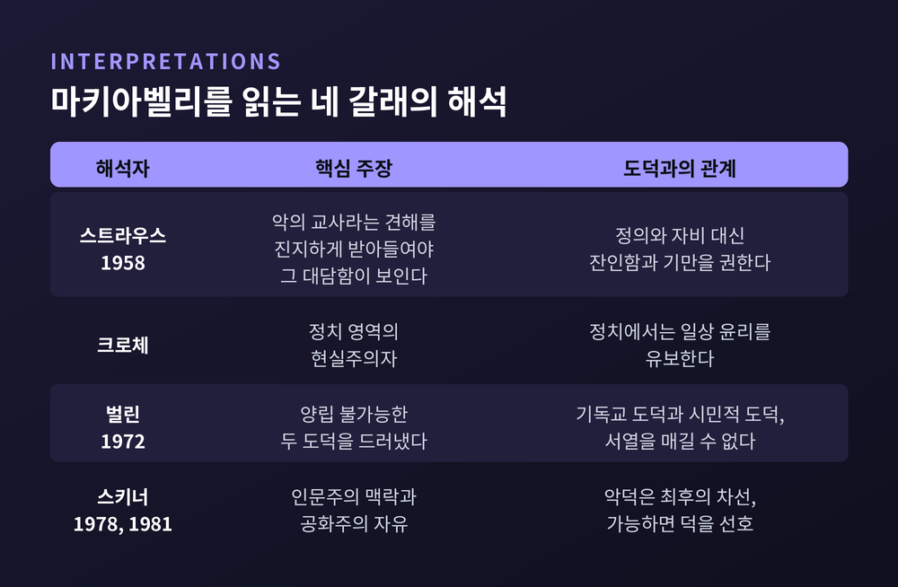

마키아벨리 군주론의 비르투와 포르투나, 정치가 도덕에서 분리된 이유
이번 글에서는 마키아벨리 『군주론』의 두 핵심어, 비르투(virtù)와 포르투나(fortuna)를 정리해 보겠습니다. 이 두 단어를 따라가면 "정치는 왜 도덕에서 떨어져 나왔는가"라는 물음에 대한 마키아벨리의 답이 드러납니다.
먼저 요점 세 가지입니다.
- 비르투는 도덕적 덕이 아니라, 상황에 맞춰 행동을 바꾸는 정치적 역량입니다.
- 포르투나는 인간사의 절반을 흔드는 힘이며, 비르투는 그 힘에 대비해 쌓는 제방입니다.
- 마키아벨리는 도덕을 부정했다기보다, 정치의 성패를 도덕과 다른 기준으로 재자고 제안했습니다. 이 제안을 어떻게 읽을지는 지금도 학자마다 갈립니다.

해임된 서기관이 농장에서 쓴 책
『군주론』은 서재에서 태어난 책이 아닙니다. 실패한 공직자의 책입니다.
마키아벨리는 1469년 피렌체에서 태어났습니다. 1494년 프랑스 샤를 8세가 이탈리아를 침공하자 메디치 가문이 쫓겨나고 공화정이 들어섰습니다. 사보나롤라가 처형된 1498년, 스물아홉 살의 마키아벨리는 공화국 제2서기국의 책임자가 되었습니다. 정치 경험은 없었습니다.
그 뒤 14년 동안 그는 프랑스 궁정과 황제의 궁정, 이탈리아 각지를 오가며 외교 보고서를 썼습니다. 1502년 종신 수반이 된 피에로 소데리니의 후원으로 시민 민병대도 조직했습니다. 이 민병대는 1509년 피사 재정복에서 성과를 냈습니다.
그러나 1512년, 스페인군과 교황군을 등에 업은 메디치가가 돌아왔습니다. 8월 프라토에서 민병대가 무너졌고, 공화정은 해체되었습니다. 마키아벨리는 11월 7일 해임됩니다. 이듬해 초에는 반메디치 음모 가담을 의심받아 몇 주간 투옥되고 고문까지 당했습니다.
풀려난 그는 피렌체 교외의 농장으로 물러납니다. 1513년 12월 10일, 친구 베토리에게 보낸 편지에서 『군주국에 관하여』라는 소책자를 썼다고 알립니다.
책은 메디치가에 헌정되었습니다. 처음엔 줄리아노에게, 그가 1516년 세상을 떠나자 로렌초에게. 스탠퍼드 철학백과(SEP)는 로렌초가 이 책을 거의 확실히 읽지 않았다고 봅니다. 『군주론』이라는 제목으로 인쇄된 것은 저자가 죽고 5년 뒤인 1532년입니다.
관직에 복귀하려던 사람이 서둘러 쓴 책. 이것이 『군주론』의 출발점입니다. 이 배경을 알고 읽으면, 책 곳곳의 냉정함이 이론이기 이전에 체험의 기록이라는 점이 보입니다.
'군주의 거울'과 결별하다
마키아벨리 이전에도 군주에게 조언하는 책은 많았습니다. 중세와 르네상스의 '군주의 거울' 문헌입니다.
이 전통의 전제는 단순했습니다. 통치자가 정의롭고 경건하면 오래, 평화롭게 다스린다. 선을 행하면 잘 다스린다는 등식입니다.
마키아벨리는 이 등식을 끊었습니다. SEP의 정리에 따르면 그에게 정당한 권력과 부당한 권력을 가르는 도덕적 기준은 없습니다. 선하다고 권력이 보장되지 않고, 선하다고 더 많은 권위를 갖는 것도 아닙니다. 정치의 실질적 관심은 '국가를 유지하는 것'입니다.
15장에서 그는 방향을 분명히 합니다. 상상 속의 공화국이나 군주국이 아니라 '실효적 진실(verità effettuale)'을 따르겠다고 선언합니다. 인터넷 철학백과(IEP)는 이 대목이 『군주론』에서 '공화국'이라는 말이 명시적으로 나오는 마지막 자리라고 짚습니다.
그래서 군주는 선하지 않을 수 있는 법을 배워야 합니다. 가능하면 선을 행하되, 필요하면 악으로 들어설 줄도 알아야 합니다.
예전의 조언서는 "좋은 사람이 되라"고 말했습니다. 마키아벨리는 "필요할 때 무엇이든 할 수 있는 사람이 되라"고 말합니다.
비르투 — 덕이 아니라 유연함
비르투는 사전적으로 '덕'입니다. 그러나 마키아벨리의 비르투는 도덕적 선함과 다릅니다.
SEP는 이를 국가를 유지하고 위업을 이루는 데 필요한 자질 전반으로 설명합니다. 영어 번역도 문맥에 따라 기량, 재능, 결단력, 힘으로 달라집니다. 한 단어로 옮기기 어려운 개념입니다.
그 중심에는 '유연한 기질'이 있습니다. 운과 상황이 명하는 대로 선에서 악으로, 다시 선으로 행동을 바꿀 수 있는 능력입니다. 『전쟁의 기술』에서도 그는 전장의 조건에 따라 전략을 바꾸는 장군의 역량을 같은 말로 부릅니다. 정치는 규모가 다른 전장인 셈입니다.
다만 비르투가 곧 '무엇이든 허용'은 아닙니다. 8장의 아가토클레스가 그 경계를 보여줍니다. 그는 시라쿠사의 원로원과 유력 시민을 불러 모아 학살하고 권력을 잡았습니다. 마키아벨리는 그의 역량은 인정하면서도, 시민을 죽이고 친구를 배신하는 것을 비르투라 부를 수는 없다고 씁니다. 그렇게 권력은 얻어도 영광은 얻지 못한다는 것입니다.
비르투는 도덕과 분리되었지만, 영광이라는 또 다른 기준에 묶여 있습니다. 이 모호함이 이후 수백 년 해석 논쟁의 씨앗이 됩니다.
포르투나 — 강은 막을 수 없지만 제방은 쌓을 수 있다
비르투의 짝은 포르투나, 곧 운명입니다.
전통 속 포르투나는 변덕스럽지만 대체로 너그러운 여신이었습니다. 좋은 것과 나쁜 것을 함께 나눠주는 존재였습니다. 마키아벨리의 포르투나는 더 거칩니다. SEP는 이를 인간 불행의 원천이자 정치 질서의 적으로 요약합니다.
25장에서 그는 포르투나가 우리 행위의 절반을 좌우하고, 나머지 절반쯤을 우리에게 맡긴다고 씁니다. 눈여겨볼 것은 말투입니다. 원문은 "참일 수도 있다고 판단한다"는 유보적 표현입니다. IEP는 이 유보가 독자에게 오히려 그 명제를 의심해 보라고 권하는 장치일 수 있다고 봅니다.
이어지는 비유가 유명합니다. 포르투나는 성난 강과 같습니다. 범람하면 평야를 호수로 만들고 나무와 집을 쓰러뜨립니다. 그러나 날이 평온할 때 제방과 둑을 쌓아 두면 물길을 돌리거나 피해를 줄일 수 있습니다. 포르투나는 비르투가 대비하지 않은 곳에서 힘을 드러냅니다.
그는 당시 이탈리아를 제방 없는 들판에 비유했습니다. 독일, 스페인, 프랑스는 대비가 되어 있었다는 진단도 덧붙입니다.
한계도 있습니다. 25장 끝의 여성 비유는 포르투나를 과감하게 제압해야 한다는 뜻으로 쓰였는데, 오늘날 읽기에 불편한 표현입니다. 게다가 마키아벨리 스스로도 인간이 시대에 맞춰 본성을 바꿀 수 있는지 회의했습니다. 율리우스 2세는 성급한 기질이 시대와 맞아떨어져 성공했을 뿐, 시대가 바뀌었다면 몰락했으리라고 그는 말합니다.
'사랑받기보다 두려움의 대상이 되라'의 정확한 뜻
『군주론』에서 가장 많이 인용되는 문장은 17장에 있습니다. 사랑받는 것과 두려움의 대상이 되는 것 중 어느 쪽이 나은가.
그의 답에는 조건이 붙어 있습니다. 둘 다일 수 없다면, 두려움의 대상이 되는 편이 훨씬 안전하다는 것입니다.
근거는 인간에 대한 비관적 관찰입니다. 사람은 은혜를 모르고 변덕스러우며 이익을 좇습니다. 사랑은 의무의 끈이라 이익이 걸리면 쉽게 끊깁니다. 두려움은 처벌에 대한 공포로 사람을 붙잡습니다.
그런데 같은 장에서 그는 선을 긋습니다. 두려움은 괜찮지만 증오는 반드시 피해야 합니다. 방법도 구체적입니다. 시민의 재산과 여자에게 손대지 않으면 됩니다. 사람은 아버지의 죽음보다 유산을 잃은 일을 더 늦게 잊는다는 것이 그의 설명입니다.
그러니 이 문장을 "민심은 신경 쓰지 말라"로 읽는 것은 오독입니다. 마키아벨리는 정반대로, 여론의 가장 위험한 형태인 증오를 관리하라고 말합니다.
체사레 보르자, 비르투의 표본인가 반면교사인가
『군주론』 7장의 주인공은 체사레 보르자입니다. 교황 알렉산데르 6세의 아들로, 아버지의 후원과 프랑스, 용병에 기대 로마냐 지역을 장악했습니다. 7장 제목부터가 '타인의 무력과 포르투나로 얻은 새 군주국'입니다.
마키아벨리는 1502년 피렌체의 사절로 보르자를 직접 만났고, 이후 그의 행보를 가까이서 지켜봤습니다. 두 장면이 특히 유명합니다.
첫째, 레미로 데 오르코. 보르자는 1501년 그를 로마냐 총독에 앉혔습니다. 레미로는 고문과 공개처형으로 질서를 잡았지만, 공포와 함께 증오도 샀습니다. 1502년 12월 26일, 그의 몸은 두 동강 난 채 체세나 광장에 전시되었습니다. 『군주론』은 보르자가 가혹함의 책임을 자신에게서 떼어내려고 그를 처형했다고 씁니다. 다만 역사 기록에는 그가 반보르자 음모에 연루되어 처형됐다는 설명도 함께 남아 있습니다.
둘째, 세니갈리아. 1502년 12월 31일, 보르자는 자신을 겨냥한 음모에 가담했던 용병대장들을 화해를 가장해 불러 모은 뒤 체포했습니다. 비텔로초와 올리베로토는 그날 밤 교살되었고, 오르시니 형제는 이듬해 1월 18일 처형되었습니다. 현장에 있던 마키아벨리는 그들이 내일 아침까지 살아 있지 못할 것이라는 보고를 피렌체로 보냈습니다.
그리고 1503년 8월 18일, 알렉산데르 6세가 세상을 떠납니다. 부자가 함께 열병을 앓았고 체사레는 살아남았지만 결정적 시기를 놓쳤습니다. 한 달도 안 돼 새 교황 비오 3세가 사망하고, 보르자 가문을 싫어하던 율리우스 2세가 즉위했습니다. 체사레는 교회의 후원도, 교황군 지휘권도 잃었습니다.
마키아벨리는 이 몰락을 대체로 포르투나의 악의로 돌립니다. 동시에 율리우스 2세의 선출을 허용한 것은 실수였다고 지적합니다.
해석은 갈립니다. 전통적으로 보르자는 '새 군주'의 모범으로 읽혀 왔습니다. 반면 『리뷰 오브 폴리틱스』에 실린 한 논문은, 보르자가 타인의 무력에 의존하다 무너지고 그 실패를 운명 탓으로 돌린 반면교사라고 봅니다. 7장의 제목을 떠올리면 이 독해도 충분히 설득력이 있습니다.
『로마사 논고』 속의 또 다른 마키아벨리
『군주론』만 읽으면 마키아벨리는 군주정의 기술자처럼 보입니다. 그러나 그는 2장에서 이미 공화국은 다른 곳에서 길게 다뤘다며 논의를 미룹니다. 그 '다른 곳'이 『로마사 논고』로 해석됩니다.
『논고』는 1514년 무렵 쓰기 시작해 1518~19년경 마쳤고, 역시 사후인 1531년에 출간되었습니다. SEP는 이 책이 마키아벨리의 공화주의적 신념을 가장 솔직하게 드러낸다고 평가합니다.
여기서 그는 두 가지 삶을 구분합니다. '안전하게 사는 것(vivere sicuro)'과 '자유롭게 사는 것(vivere libero)'입니다. 법을 잘 지키는 프랑스 왕국은 백성에게 안전은 주지만 자유는 주지 못합니다. 백성을 무장 해제한 탓에 외국 용병에 기대야 하는 약점도 안고 있습니다.
더 대담한 주장은 1권 4장에 있습니다. 로마의 평민과 원로원 사이의 불화, 곧 소요가 로마를 자유롭고 강하게 만들었다는 것입니다. 자유를 위한 법은 그 불화에서 나왔다고 그는 말합니다. 인민은 억압받지 않기를, 귀족은 억압하기를 원하니, 두 기질의 충돌 자체가 자유의 조건이라는 논리입니다.
비르투와의 연결도 흥미롭습니다. 한 개인은 본성을 바꾸기 어렵습니다. 신중한 파비우스는 끝까지 신중했습니다. 그러나 로마 공화국은 신중함이 필요할 때 파비우스를, 공세가 필요할 때 스키피오를 쓸 수 있었습니다. 파비우스가 왕이었다면 전쟁에서 졌을지도 모른다고 마키아벨리는 씁니다.
한 사람에게 요구하기 어려운 유연성을 제도가 대신하는 구조입니다. 『군주론』의 비르투가 개인의 과제였다면, 『논고』에서는 공화국 전체의 과제가 됩니다.
마키아벨리즘이라는 오해, 그리고 네 갈래의 해석
그의 이름은 일찍부터 악명과 함께 퍼졌습니다. 1559년 교회 금서목록에 저작 전체가 올랐고, 개신교권에서도 비난받았습니다. SEP에 따르면 '마키아벨리즘'이라는 말은 17세기 피에르 벨이 만든 것으로 보입니다. 한편 루소는 『사회계약론』에서 『군주론』을 공화주의자의 교과서라 불렀습니다. 군주의 실체를 백성에게 폭로한 책이라는 뜻입니다.
20세기 이후의 해석은 크게 네 갈래로 정리할 수 있습니다.
- 레오 스트라우스(1958, 『마키아벨리에 관한 생각들』): 그를 '악의 교사'로 보는 소박한 견해에 공감한다고 밝힙니다. 다만 그 견해를 진지하게 받아들여야 그 사유의 대담함과 비전의 크기를 제대로 볼 수 있다고 덧붙입니다.
- 베네데토 크로체: 정치라는 영역에서 일상 윤리를 유보한 현실주의자로 봅니다.
- 이사야 벌린(1972, 「마키아벨리의 독창성」): 마키아벨리가 기독교 도덕을 부정한 것이 아니라, 그와 양립할 수 없는 또 하나의 도덕을 제시했다고 봅니다. 용기, 활력, 공적 성취, 질서를 기리는 이교적·시민적 도덕입니다. 둘 사이에 합리적 서열을 매길 방법이 없다는 점을 드러냈고, 그 결과 의도치 않게 가치 다원주의의 문을 열었다는 것이 벌린의 독해입니다.
- 퀜틴 스키너(1978, 1981): 당대 인문주의의 맥락 속에서 읽습니다. 관습적 악덕은 '최후의 차선'이며, 다른 조건이 같다면 마키아벨리도 도덕적 덕을 선호했다고 봅니다. 또한 『논고』의 자유 개념을 현대 신로마 공화주의의 원천으로 되살렸습니다.
심리학의 '마키아벨리즘'은 또 다른 이야기입니다. 1970년 크리스티와 가이스가 만든 20문항 MACH-IV 척도는 조작적이고 기만적인 성향을 잰다는 도구입니다. 이 개념은 이후 나르시시즘, 사이코패시와 함께 '어둠의 3요소'로 묶였습니다. 그러나 학자들은 이 척도가 마키아벨리의 이름만 빌렸을 뿐 그의 정치사상과는 무관하다고 지적합니다.

정리하면 이렇습니다.
마키아벨리가 정치를 도덕에서 떼어낸 이유는 악을 좋아해서가 아니었습니다. 14년간 공화국을 섬기다 하루아침에 무너지는 것을 본 사람이, 선한 의도만으로는 나라를 지킬 수 없다는 사실을 기록한 것에 가깝습니다. 그가 도덕 대신 내세운 기준은 강을 앞에 두고 제방을 쌓는 능력이었습니다.
저는 이 책을 냉소의 교본보다 경고문으로 읽는 편이 더 정직하다고 생각합니다. 물론 한계는 분명합니다. 아가토클레스와 보르자 사이 어디에 선을 그을지, 그는 끝내 깔끔한 답을 주지 않습니다. 그 빈자리를 두고 스트라우스와 벌린, 스키너가 전혀 다른 마키아벨리를 그려냈습니다.
'정치는 선의가 아니라 대비로 평가받는다.'
오늘 우리가 그를 다시 읽어야 하느냐고 물으신다면, 그 불편함이 여전히 유효하기 때문에 그렇다고 답하겠습니다.